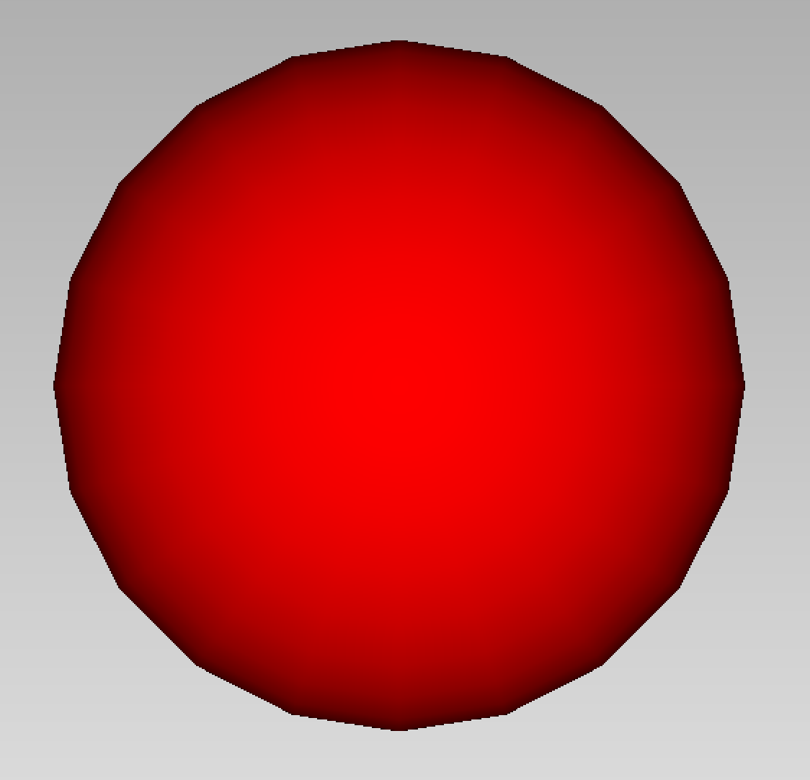
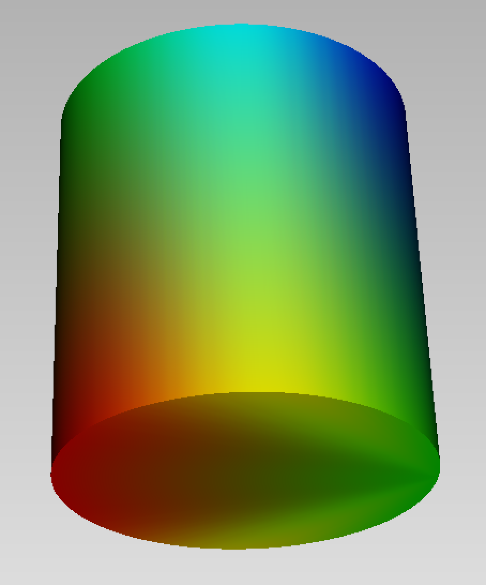
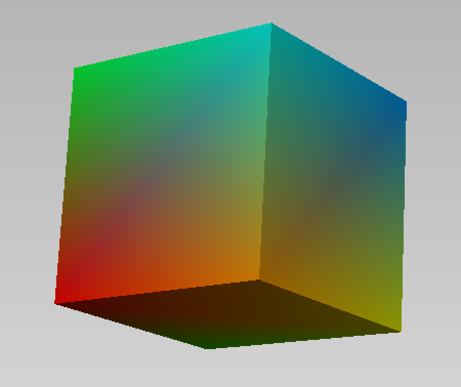

Attributes
The attributes of a geometric object are
color::Color: a color given by its rgb componentssize::Color: a number (::Float64) indicatingthe size of points or of a curvefield: a function, a type or an array describing a field on the object.
They are attributed by providing key=value parameters in the construction of the object or by assignement
obj[:key]=valueColor
Missing docstring for Color. Check Documenter's build log for details.
Here is an example of a sphere, with the attribute color set to the red color.
S = sphere(point(0.,1.,0.), 0.5, color=Color(255,0,0))
Fields
Axl.DirField — TypeScalar field described by a vector dir. The field value at a point is obtained by taking the scalar product with the vector.
Here is an example of a cylinder, with a directional field for the direction [1,1,0].
C = cylinder(point(0.,0.,0.), point(0.,1.,0.), 0.5, field=DirField(1.,1.,0.))
Axl.DistField — TypeScalar field described by the point pt. The field value at a point is obtained by computing the distance to the point pt.
C = cone(point(0.,0.,0.), point(0.,1.,0.), 0.5, field=DistField(0.5,0.,0.))
A field can also be described by an array of values, attached for instance to the vertices of a mesh.
C = cube(point(0.,0.,0.), 0.5, field=[Float64(i) for i in 1:8])